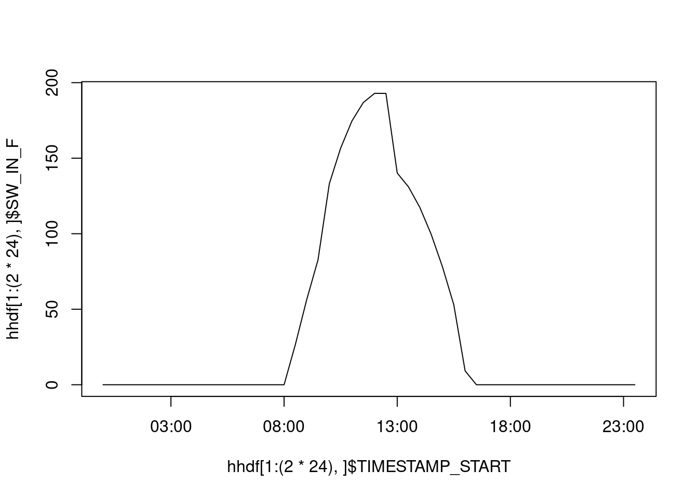
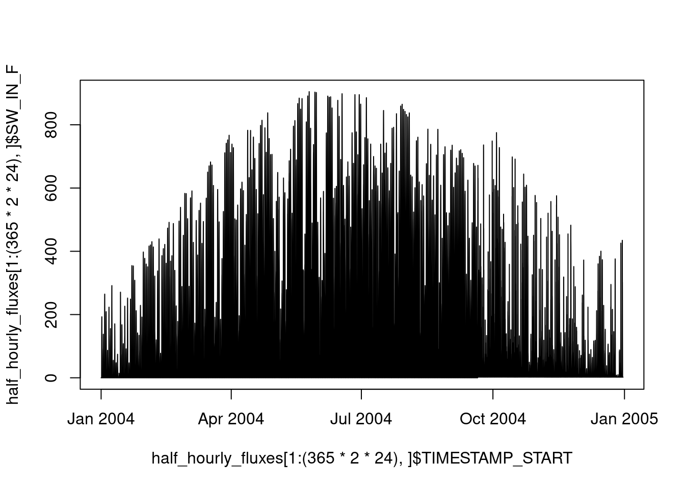
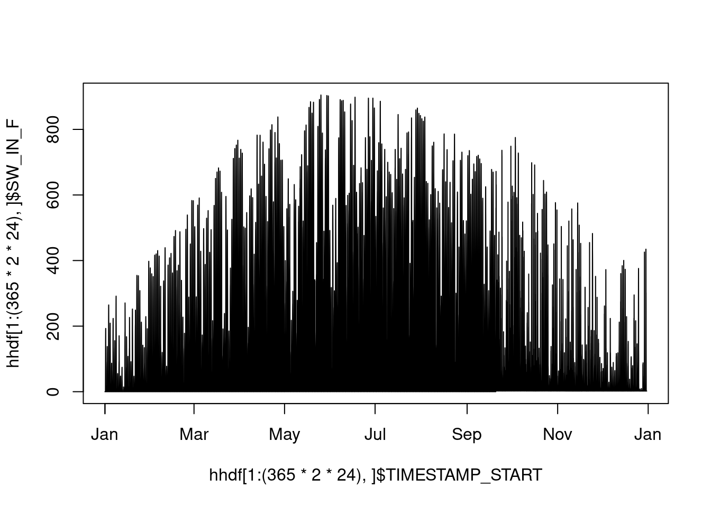
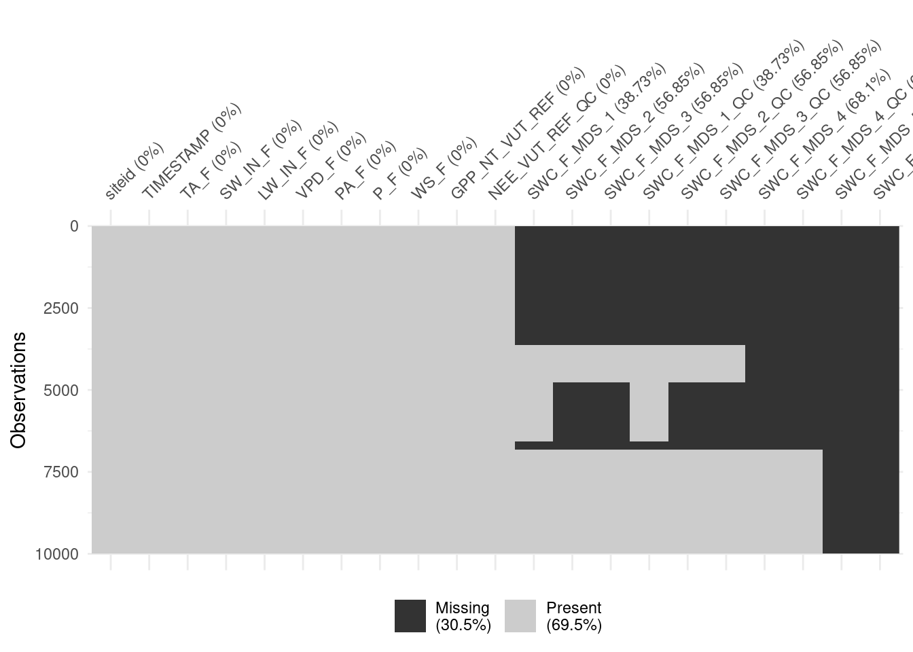

Chapter 3 Data wrangling
Chapter lead author: Benjamin Stocker
3.1 Learning objectives
In this chapter you will learn how to manipluate and transform data, a curcial part of the data science workflow.
You will learn how to:
- read and transform tabulated data
- understand the ‘tidy’ data concept
- select variables
- Aggregate data
- handle bad and/or missing data
3.2 Tutorial
Exploratory data analysis - the transformation, visualization, and modelling of data - is the central part of any (geo-) data science workflow and typically takes up a majority of the time we spend on a research project. The transformation of data often turns out to be particularly (and often surprisingly) time-demanding. Therefore, it is key to master typical steps of data transformation, and to implement them in a transparent fashion and efficiently - both in terms of robustness against coding errors (“bugs”) and in terms of code execution speed.
We refer to data wrangling here to encompass the steps for preparing the data set prior to modelling - including, the combination of variables from different data sources, the removal of bad data, and the aggregation of data to the desired resolution or granularity (e.g., averaging over all time steps in a day, or over all replicates in a sample).
In contrast, pre-processing refers to the additional steps that are either required by the the specific machine learning algorithm used with the data (e.g., centering and scaling for K-Nearest Neighbors or Neural Networks), the gap-filling of variables, or the transformation of variables guided by the resulting improvement of the predictive power of the machine learning model. Pre-processing is part of the modelling workflow and includes all steps that apply transformations that use parameters derived from the data. We will introduce and discuss data pre-processing in Chapter 9.
3.2.1 Example data
The example data used in this chapter are parallel time series of (gaseous) CO\(_2\) and water vapor exchange fluxes between the vegetation and the atmosphere, along with various meteorological variables measured in parallel. Quasi-continuous measurements of temporally changing gas exchange fluxes are obtained with the eddy covariance technique which relies on the parallel quantification of vertical wind speeds and gas concentrations.
The data are provided at half-hourly resolution for the site CH-Lae, located on the south slope of the Lägern mountain on the Swiss Plateau at 689 m a.s.l. in a mixed forest with a distinct seasonal course of active green leaves (a substantial portion of the trees in the measured forest are deciduous). The dataset is generated and formatted following standard protocols (FLUXNET2015). For more information of the variables in the dataset, see the FLUXNET2015 website and Pastorello et al., 2020 for a comprehensive documentation of variable definitions and methods.
For our demonstrations, the following variables are the most relevant:
TIMESTAMP_START: Hour and day of the start of the measurement period for which the respective row’s data are representative. Provided in a format of “YYYYMMDDhhmm”.TIMESTAMP_END: Hour and day of the end of the measurement period for which the respective row’s data are representative. Provided in a format of “YYYYMMDDhhmm”.TA_*(°C): Air temperature.SW_IN_*(W m\(^{-2}\)): Shortwave incoming radiationLW_IN_*(W m\(^{-2}\)): Longwave incoming radiationVPD_*(hPa): Vapor pressure deficit (the difference between actual and saturation water vapor pressure)PA_*(kPa): Atmospheric pressureP_*(mm): PrecipitationWS_*(m \(^{-1}\)): Wind speedSWC_*(%): Volumetric soil water contentGPP_*(\(\mu\)mol CO\(_2\) m\(^{-2}\) s\(^{-1}\)): Gross primary production (the ecosystem-level gross CO\(_2\) uptake flux driven by photosynthesis)*_QC: Quality control information for the variable*. Important for us:NEE_*_QCis the quality control information for the net ecosystem CO\(_2\) exchange flux (NEE_*) and for GPP derived from the corresponding NEE estimate (GPP_*). 0 = measured, 1 = good quality gap-filled, 2 = medium, 3 = poor.
Suffixes _* indicate that multiple estimates for respective variables are available and distinguished by different suffixes. For example, variables TA_* contain the same information, but are derived with slightly different assumptions and gap-filling techniques. The meanings of suffixes are described in Pastorello et al., 2020.
3.2.2 Tidyverse
The tidyverse is a collection of R packages and functions that share a common design philosophy, enabling a particularly efficient implementation of transformation steps on tabular data. The most important data and function design principle of the tidyverse is that each function takes a data frame as its first argument and returns a data frame as its output.
From this design principles, even the most convoluted code and implementation of data transformation steps fall into place and fast and error-free progression through exploratory data analysis is facilitated. Therefore, you will be introduced to the R {tidyverse} here and we heavily rely on this dialect of the R language throughout the remainder of this course.
3.2.3 Reading tabular data
Tabular data are organised in rows and columns. R data frames are tabular data. As introduced in Chapter 1, each column can be regarded as a vector of a certain type. Each row contains the same number of columns and each column contains the same type of values (for example numeric, or characters). Each row can be regarded as a separate instance or data record - for example a record of simultaneously taken measurements of different variables, along with some attributes and meta information (e.g., the date). In Chapter 5, you will be introduced to other types of data.
The most common format for tabular data are CSV (comma-separated-values), typically indicated by the file name suffix .csv. CSV is a text-based file format, readable across platforms and does not rely on proprietary software (as opposed to, for example, .xlsx). The first row in a CSV file typically specifies the name of the variable provided in the respective column.
Let’s get started with working with our example data set and read it into R, as the variable half_hourly_fluxes. Note that the naming of variables can be important for keeping code legible. Chose intuitively understandable names that describe what the object represents (as done here).
To import the data into the R environment, we use the function read_csv() from the {readr} package (part of tidyverse). In other R code, you will also encounter the base R read.csv() function. However, read_csv() is much faster and reads data into a tidyverse-data frame (a tibble) which has some useful additional characteristics, on top of a common R data frame. For example, tibbles generate a nicely readable output when printing the object as is done below.
half_hourly_fluxes <- readr::read_csv("./data/FLX_CH-Lae_FLUXNET2015_FULLSET_HH_2004-2006.csv")
half_hourly_fluxes## # A tibble: 52,608 × 235
## TIMEST…¹ TIMES…² TA_F_…³ TA_F_…⁴ TA_ERA TA_F TA_F_QC SW_IN…⁵ SW_IN…⁶ SW_IN…⁷
## <dbl> <dbl> <dbl> <dbl> <dbl> <dbl> <dbl> <dbl> <dbl> <dbl>
## 1 2.00e11 2.00e11 -9999 -9999 -2.22 -2.22 2 0 -9999 -9999
## 2 2.00e11 2.00e11 -9999 -9999 -2.25 -2.25 2 0 -9999 -9999
## 3 2.00e11 2.00e11 -9999 -9999 -2.28 -2.28 2 0 -9999 -9999
## 4 2.00e11 2.00e11 -9999 -9999 -2.50 -2.50 2 0 -9999 -9999
## 5 2.00e11 2.00e11 -9999 -9999 -2.72 -2.72 2 0 -9999 -9999
## 6 2.00e11 2.00e11 -9999 -9999 -2.94 -2.94 2 0 -9999 -9999
## 7 2.00e11 2.00e11 -9999 -9999 -3.17 -3.17 2 0 -9999 -9999
## 8 2.00e11 2.00e11 -9999 -9999 -3.39 -3.39 2 0 -9999 -9999
## 9 2.00e11 2.00e11 -9999 -9999 -3.61 -3.61 2 0 -9999 -9999
## 10 2.00e11 2.00e11 -9999 -9999 -3.59 -3.59 2 0 -9999 -9999
## # … with 52,598 more rows, 225 more variables: SW_IN_ERA <dbl>, SW_IN_F <dbl>,
## # SW_IN_F_QC <dbl>, LW_IN_F_MDS <dbl>, LW_IN_F_MDS_QC <dbl>, LW_IN_ERA <dbl>,
## # LW_IN_F <dbl>, LW_IN_F_QC <dbl>, LW_IN_JSB <dbl>, LW_IN_JSB_QC <dbl>,
## # LW_IN_JSB_ERA <dbl>, LW_IN_JSB_F <dbl>, LW_IN_JSB_F_QC <dbl>,
## # VPD_F_MDS <dbl>, VPD_F_MDS_QC <dbl>, VPD_ERA <dbl>, VPD_F <dbl>,
## # VPD_F_QC <dbl>, PA <dbl>, PA_ERA <dbl>, PA_F <dbl>, PA_F_QC <dbl>, P <dbl>,
## # P_ERA <dbl>, P_F <dbl>, P_F_QC <dbl>, WS <dbl>, WS_ERA <dbl>, WS_F <dbl>, …To reproduce this code chunk, you can download the file
FLX_CH-Lae_FLUXNET2015_FULLSET_HH_2004-2006.csvfrom here and read it from the local path where the file is stored on your machine. All data files used in this tutorials are stored here.
Since the file is properly formatted, with variable names given in the first line of the file, the function read_csv() identifies them correctly as column names and interprets values in each column as values of a consistent type (as numeric <dbl>). The file is also automatically machine-readable because it has no merged cells and only one value per cell.
3.2.4 Variable selection
For our further data exploration, we will reduce the data frame we are working with and select a reduced set of variables. Reducing the dataset can have the advantage of speeding up further processing steps, especially when the data are large. For the further steps in this chapter we will now subset our original data. We select the following variants of variables described above, plus some additional variables (further information in Pastorello et al., 2020):
- All variables with names starting with
TIMESTAMP) - All meteorological variables derived following the “final gap-filled method”, as indicated with names ending with
_F. - GPP estimates that are based on the nighttime decomposition method, using the “most representative” of different gap-filling versions, after having applied the variable u-star filtering method (
GPP_NT_VUT_REF) and the corresponding quality control information (NEE_VUT_REF_QC) - Soil water measured at different depths (variables starting with
SWC_F_MDS_) - Do not use any radiation variables derived with the “JSBACH” algorithm (not with a name that contains the string
JSB) - Flag indicating whether a time step is at night (
NIGHT)
This is implemented by:
half_hourly_fluxes <- select(
half_hourly_fluxes,
starts_with("TIMESTAMP"),
ends_with("_F"),
GPP_NT_VUT_REF,
NEE_VUT_REF_QC,
starts_with("SWC_F_MDS_"),
-contains("JSB"),
NIGHT
)This reduces our dataset from 235 available variables to 59 variables. As you can see, select() is a powerful tool to apply multiple selection criteria on your data frame in one step. It takes many functions that make filtering the columns easier. For example, criteria can be formulated based on the variable names with starts_with(), ends_with(), contains(), matches(), etc. Using these functions within select() can help if several column names start with the same characters or contain the same pattern and all need to be selected. If a minus (-) is added in front of a column name or one of the mentioned functions within select(), then R will not include the stated column(s). Note that the selection criteria are evaluated in the order we write them in the select() function call. You can find the complete reference for selecting variables here.
3.2.5 Time objects
The automatic interpretation of the variables TIMESTAMP_START and TIMESTAMP_END by the function read_csv() is not optimal:
class(half_hourly_fluxes$TIMESTAMP_START[[1]])## [1] "numeric"as.character(half_hourly_fluxes$TIMESTAMP_START[[1]])## [1] "200401010000"As we can see, it is considered by R as a numeric variable with 12 digits (“double-precision”, occupying 64 bits in computer memory). After printing the variable as a string, we can guess that the format is: YYYYMMDDhhmm. The {lubridate} package is designed to facilitate processing date and time objects. Knowing the format of the timestamp variables in our dataset, we can use ymd_hm() to convert them to actual date-time objects.
dates <- ymd_hm(half_hourly_fluxes$TIMESTAMP_START)
dates[1]## [1] "2004-01-01 UTC"Working with such date-time objects facilitates typical operations on time series. For example, adding one day can be done by:
nextday <- dates + days(1)
nextday[1]## [1] "2004-01-02 UTC"The following returns the month of each date object:
month(dates[1])## [1] 1The number 1 stands for the month of the year, i.e., January. You can find more information on formatting dates and time within the {tidyverse} here, and a complete reference of the {lubridate} package is available here.
3.2.6 Variable (re-) definition
Since read_csv() did not interpret the TIMESTAMP_* variables as desired, we may convert the entire column in the data frame into a date-time object. In base-R, we would do this by:
half_hourly_fluxes$TIMESTAMP_START <- ymd_hm(half_hourly_fluxes$TIMESTAMP_START)Modifying existing or creating new variables (columns) in a data frame is done in the {tidyverse} using the function mutate(). The equivalent statement is:
half_hourly_fluxes <- mutate(
half_hourly_fluxes,
TIMESTAMP_START = ymd_hm(TIMESTAMP_START)
)Note that in the code chunk above, the function mutate() is from the tidyverse package {dplyr}. It takes a dataframe as its first argument (here half_hourly_fluxes) and returns a dataframe as its output. You will encounter an alternative, but equivalent, syntax in the following form:
half_hourly_fluxes <- half_hourly_fluxes |>
mutate(TIMESTAMP_START = ymd_hm(TIMESTAMP_START))Here, the pipe operator |> is used. It “pipes” the object evaluated on its left side into the function on its right side, where the object takes the place of (but is not spelled out as) the first argument of that function. Using the pipe operator can have the advantage of facilitating the separation, removal, inserting, or re-arranging of individual transformation steps. Arguably, it facilitates reading code, especially for complex data transformation workflows. Therefore, you will encounter the pipe operator frequently throughout the remainder of this course.
Note: The pipe operator is so popular that has been recently included in the latest versions of base R (version 4.1.0 and beyond). This is the
|>pipe we just introduced. Nevertheless, you may encounter the%>%operator, which is the original pipe from the {magrittr} package (part of the {tidyverse}).
Note: If you cannot update R and have a version older than 4.1.0, just use the
magrittrpipe%>%throughout. This can happen if you have an older Macbook that can’t operate the latest Operating System version.
Mutating both our timestamp variables could be written as mutate(TIMESTAMP_START = ymd_hm(TIMESTAMP_START), TIMESTAMP_END = ymd_hm(TIMESTAMP_END)). Sometimes, such multiple-variable mutate statements can get quite long. A handy short version of this can be implemented using across():
half_hourly_fluxes <- half_hourly_fluxes |>
mutate(across(starts_with("TIMESTAMP_"), ymd_hm))We will encounter more ways to use mutate later in this tutorial. A complete reference to mutate() is available here.
If you only want to change the name of a variable, but not modify its values, you can do so with the {dplyr} function rename().
3.2.7 Axes of variation
Tabular data are two-dimensional (rows \(\times\) columns), but not all two-dimensional data are tabular. For example, raster data are a two-dimensional array of data (a matrix) representing variables on an evenly spaced grid, for example pixels in remotely sensed imagery. For example the volcano data (provided as an example dataset in R) is a matrix - each column contains the same variable, and no variable names are provided.
volcano[1:5, 1:5]## [,1] [,2] [,3] [,4] [,5]
## [1,] 100 100 101 101 101
## [2,] 101 101 102 102 102
## [3,] 102 102 103 103 103
## [4,] 103 103 104 104 104
## [5,] 104 104 105 105 105In the volcano dataset, rows and columns represent different geographic positions in latitude and longitude, respectively. The volcano data are not tabular data. Another typical example for non-tabular data are climate model outputs. They are typically given as arrays with more than two dimensions. Typically, this is longitude, latitude, and time, and sometimes a vertical dimension representing, for example, elevation. Such data are multi-dimensional and, as such, not tabular.
Tabular data, although formatted in two dimensions by rows and columns, may represent data that varies along multiple axes. Most environmental data are structured, that is, values of “nearby” observations tend to be more similar than values of “distant” observations. Here, “nearby” and “distant” may refer to a spatial distance, but not necessarily so. Structure in data arises from similarity of the subjects generating the data (e.g., evapotranspiration over two croplands may be more similar than evapotranspiration over a forest), or from temporal proximity. In biological data, there may be a genetic structure arising from evolutionary relatedness (Roberts et al., 2016). Note also that temporal proximity is more complex than than being governed by a single dimension - time. In environmental data, time is often expressed through periodically varying conditions (the diurnal and seasonal cycles). It’s often critical to understand and account for the structure in data when analysing it and using it for model fitting. Challenges are posed when structure is not apparent or not known.
Note also that some structures are hierarchical. For example, data may be structured by postal codes within cantons; or by hours within a day within a year. Biological data may be generated by species within genera within families. Data from experiments is typically structured as samples within treatments. You see, structure in data is rather the rule than the exception.
Our example data contains values recorded at each half-hourly time interval over the course of eleven years (check by nrow(half_hourly_fluxes)/(2*24*365)). The data are recorded at a site, located in the temperate climate zone, where solar radiation and therefore also other meteorological variables and ecosystem fluxes vary substantially over the course of a day and over the course of a year. Although not explicitly separated, the date-time object thus encodes information along multiple axes of variation in the data. For example, over the course of one day (2*24 rows in our data), the shortwave incoming radiation SW_IN_F varies over a typical diurnal cycle:
plot(
half_hourly_fluxes[1:(2*24),]$TIMESTAMP_START,
half_hourly_fluxes[1:(2*24),]$SW_IN_F,
type = "l"
)
Note:
plot()is the very basic of plotting data. In Chapter 4, you will get introduced to additional methods for visualising data. The argumenttype = "l"indicates that we want a line plot, rather than points.
Over the course of an entire year, shortwave incoming radiation varies with the seasons, peaking in summer:
plot(
half_hourly_fluxes[1:(365*2*24),]$TIMESTAMP_START,
half_hourly_fluxes[1:(365*2*24),]$SW_IN_F,
type = "l"
)
All data frames have two dimensions, rows and columns. Our data frame is organised along half-hourly time steps in rows. As described above, these time steps belong to different days, months, and years, although these “axes of variation” are not reflected by the structure of the data frame object itself and we do not have columns that indicate the day, month or year of each half-hourly time step. This would be redundant information since the date-time objects of columns TIMESTAMP_* contain this information. However, for certain applications, it may be useful to separate information regarding these axes of variation more explicitly. For example by:
half_hourly_fluxes |>
mutate(year = year(TIMESTAMP_START),
month = month(TIMESTAMP_START),
doy = yday(TIMESTAMP_START) # day of year
) |>
select(TIMESTAMP_START, TIMESTAMP_END, year, month, doy) # for displaying## # A tibble: 52,608 × 5
## TIMESTAMP_START TIMESTAMP_END year month doy
## <dttm> <dttm> <dbl> <dbl> <dbl>
## 1 2004-01-01 00:00:00 2004-01-01 00:30:00 2004 1 1
## 2 2004-01-01 00:30:00 2004-01-01 01:00:00 2004 1 1
## 3 2004-01-01 01:00:00 2004-01-01 01:30:00 2004 1 1
## 4 2004-01-01 01:30:00 2004-01-01 02:00:00 2004 1 1
## 5 2004-01-01 02:00:00 2004-01-01 02:30:00 2004 1 1
## 6 2004-01-01 02:30:00 2004-01-01 03:00:00 2004 1 1
## 7 2004-01-01 03:00:00 2004-01-01 03:30:00 2004 1 1
## 8 2004-01-01 03:30:00 2004-01-01 04:00:00 2004 1 1
## 9 2004-01-01 04:00:00 2004-01-01 04:30:00 2004 1 1
## 10 2004-01-01 04:30:00 2004-01-01 05:00:00 2004 1 1
## # … with 52,598 more rowsNote that we used mutate() here to create a new variable (column) in the data frame, as opposed to above where we overwrote an existing variable with the same function.
3.2.8 Tidy data
Data comes in many forms and shapes. For example, Excel provides a playground for even the wildest layouts of information in some remotely tabular form and merged cells as we will see in the Exercises. A data frame imposes a relatively strict formatting in named columns of equal length. But even data frames can come in various shapes - even if the information they contain is the same.
co2_concentration## # A tibble: 36 × 3
## year month co2_concentration
## <int> <ord> <dbl>
## 1 1959 Jan 315.
## 2 1959 Feb 316.
## 3 1959 Mar 316.
## 4 1959 Apr 318.
## 5 1959 May 318.
## 6 1959 Jun 318
## 7 1959 Jul 316.
## 8 1959 Aug 315.
## 9 1959 Sep 314.
## 10 1959 Oct 313.
## # … with 26 more rowsco2_concentration_monthly## # A tibble: 3 × 13
## year Jan Feb Mar Apr May Jun Jul Aug Sep Oct Nov Dec
## <int> <dbl> <dbl> <dbl> <dbl> <dbl> <dbl> <dbl> <dbl> <dbl> <dbl> <dbl> <dbl>
## 1 1959 315. 316. 316. 318. 318. 318 316. 315. 314. 313. 315. 315.
## 2 1960 316. 317. 317. 319. 320. 319. 318. 316. 314 314. 315. 316.
## 3 1961 317. 318. 318. 319. 320. 320. 318. 317. 315. 315. 316. 317.co2_concentration_yearly## # A tibble: 12 × 4
## month `1959` `1960` `1961`
## <ord> <dbl> <dbl> <dbl>
## 1 Jan 315. 316. 317.
## 2 Feb 316. 317. 318.
## 3 Mar 316. 317. 318.
## 4 Apr 318. 319. 319.
## 5 May 318. 320. 320.
## 6 Jun 318 319. 320.
## 7 Jul 316. 318. 318.
## 8 Aug 315. 316. 317.
## 9 Sep 314. 314 315.
## 10 Oct 313. 314. 315.
## 11 Nov 315. 315. 316.
## 12 Dec 315. 316. 317.There are advantages for interoperability and ease of use when data frames come with consistent layouts, adhering to certain design principles. We have learned that in tabular data, each row contains the same number of columns and each column contains the same type of values (for example numeric, or characters). And that each row can be regarded as a separate instance of the same type, for example a record of simultaneously taken measurements, along with some attributes. Following these principles strictly leads to tidy data. In essence, quoting Wickham and Grolemund (2017), data are tidy if:
- Each variable has its own column.
- Each observation has its own row.
- Each value has its own cell.
](figures/tidy_data.png)
Figure 3.1: Rules for tidy data. Figure from Wickham and Grolemund (2017)
The {tidyr} package provides powerful functions to make data tidy. In the examples above, co2_concentration_monthly and and co2_concentration_yearly are not tidy. In co2_concentration_monthly, the same variable (CO2 concentration) appears in multiple columns. Organising columns by months leads to a “wide” table format. We can convert it to a “long” format by:
co2_concentration_monthly |>
pivot_longer(cols = 2:13, names_to = "month", values_to = "co2")## # A tibble: 36 × 3
## year month co2
## <int> <chr> <dbl>
## 1 1959 Jan 315.
## 2 1959 Feb 316.
## 3 1959 Mar 316.
## 4 1959 Apr 318.
## 5 1959 May 318.
## 6 1959 Jun 318
## 7 1959 Jul 316.
## 8 1959 Aug 315.
## 9 1959 Sep 314.
## 10 1959 Oct 313.
## # … with 26 more rowsThis corresponds to the format of co2_concentration and is tidy. A long format of data frames is required to visualise data using the plotting functions of the {ggplot2} package which will be introduced in Chapter 4.
Either way, for certain applications, it may be advantageous to work with a wide format. We can convert from a long to a wide format by:
co2_concentration |>
pivot_wider(names_from = year, values_from = co2_concentration)## # A tibble: 12 × 4
## month `1959` `1960` `1961`
## <ord> <dbl> <dbl> <dbl>
## 1 Jan 315. 316. 317.
## 2 Feb 316. 317. 318.
## 3 Mar 316. 317. 318.
## 4 Apr 318. 319. 319.
## 5 May 318. 320. 320.
## 6 Jun 318 319. 320.
## 7 Jul 316. 318. 318.
## 8 Aug 315. 316. 317.
## 9 Sep 314. 314 315.
## 10 Oct 313. 314. 315.
## 11 Nov 315. 315. 316.
## 12 Dec 315. 316. 317.When seeking, for example, the average CO2 concentration for each month, you may be tempted to work with a wide data frame and treat it as a matrix to calculate a mean by rows. You can do so, but then, you leave the tidyverse. This will complicate your life. You’ll learn how to perform tidy data aggregation below.
The concept of tidy data can even be taken further by understanding a “value” as any object type, e.g., a list or a data frame. This leads to a list or data frame “nested” within a data frame. You will learn more about this below.
3.2.9 Aggregating data
Aggregating data refers to collapsing a larger set of values into a smaller set of values that are derived from the larger set. For example, we can aggregate over all \(N\) rows in a data frame (\(N\times M\)), calculating the sum for each of the \(M\) columns. This returns a data frame (\(1 \times M\)) with the same number of columns as the initial data frame, but only one row. Often, aggregations are done not across all rows but for rows within \(G\) groups of rows. This yields a data frame (\(G \times M\)) with the number of rows corresponding to the number of groups.
Let’s say we want to calculate the mean of half-hourly shortwave radiation within each day. We thus have \(N\) half-hourly time steps in \(G\) days. That is, to aggregate our half-hourly data to daily data by taking a mean. There are two pieces of information needed for an aggregation step: The factor (or “axis of variation”), here days, that groups a vector of values for collapsing it into a single value, and the function used for collapsing values, here, the mean() function. This function should take a vector as an argument and return a single value as an output. These two steps are implemented by the {dplyr} functions group_by() and summarise(). The entire aggregation workflow is implemented by the following code:
daily_fluxes <- half_hourly_fluxes |>
mutate(date = as_date(TIMESTAMP_START)) |> # converts the ymd_hm-formatted date-time object to a date-only object (ymd)
group_by(date) |>
summarise(SW_IN_F = mean(SW_IN_F))The seasonal course can now be more clearly be visualized with the data aggregated to daily values.
plot(daily_fluxes[1:365,]$date, daily_fluxes[1:365,]$SW_IN_F, type = "l")
We can also apply multiple aggregation functions to different variables simultaneously. In the example below, we aggregate half-hourly data to daily data by…
taking the daily mean GPP
counting the number of half-hourly data points by day
counting the number of measured (not gap-filled) data points
taking the mean shortwave radiation
Finally, we calculate the fraction of measured underlying half-hourly data from which the aggregation is calculated and we save the daily data frame as a CSV file for later use.
daily_fluxes <- half_hourly_fluxes |>
mutate(date = as_date(TIMESTAMP_START)) |> # converts time object to a date object
group_by(date) |>
summarise(GPP_NT_VUT_REF = mean(GPP_NT_VUT_REF, na.rm = TRUE),
n_datapoints = n(), # counts the number of observations per day
n_measured = sum(NEE_VUT_REF_QC == 0), # counts the number of actually measured data (excluding gap-filled and poor quality data)
SW_IN_F = mean(SW_IN_F, na.rm = TRUE), # we will use this later
.groups = 'drop' # to un-group the resulting data frame
) |>
mutate(f_measured = n_measured / n_datapoints) # calculate the fraction of measured values over total observations
write_csv(daily_fluxes, file = "data/daily_fluxes.csv")
daily_fluxes## # A tibble: 1,096 × 6
## date GPP_NT_VUT_REF n_datapoints n_measured SW_IN_F f_measured
## <date> <dbl> <int> <int> <dbl> <dbl>
## 1 2004-01-01 -0.0138 48 0 38.1 0
## 2 2004-01-02 0.768 48 0 23.9 0
## 3 2004-01-03 0.673 48 0 54.1 0
## 4 2004-01-04 -0.322 48 0 41.7 0
## 5 2004-01-05 0.841 48 0 17.4 0
## 6 2004-01-06 1.22 48 0 40.5 0
## 7 2004-01-07 0.215 48 0 31.6 0
## 8 2004-01-08 1.11 48 0 58.4 0
## 9 2004-01-09 1.44 48 0 11.9 0
## 10 2004-01-10 0.364 48 0 27.6 0
## # … with 1,086 more rowsMore info on how to group values using summarise functions here, or a summary on the inputs the function group_by() and summarise() take.
Aggregating is related to nesting performed by the {tidyr} function nest():
half_hourly_fluxes |>
mutate(date = as_date(TIMESTAMP_START)) |>
group_by(date) |>
nest()## # A tibble: 1,096 × 2
## # Groups: date [1,096]
## date data
## <date> <list>
## 1 2004-01-01 <tibble [48 × 20]>
## 2 2004-01-02 <tibble [48 × 20]>
## 3 2004-01-03 <tibble [48 × 20]>
## 4 2004-01-04 <tibble [48 × 20]>
## 5 2004-01-05 <tibble [48 × 20]>
## 6 2004-01-06 <tibble [48 × 20]>
## 7 2004-01-07 <tibble [48 × 20]>
## 8 2004-01-08 <tibble [48 × 20]>
## 9 2004-01-09 <tibble [48 × 20]>
## 10 2004-01-10 <tibble [48 × 20]>
## # … with 1,086 more rowsHere, the data frame has one row per date and therefore the same number of rows as the data frame daily_fluxes, but the data itself is not reduced by a summarising function. Instead, the data are kept at the half-hourly level, but it’s nested inside the new column data, which now contains a list of half-hourly data frames for each day. This is just a brief perspective of what nesting is about. More is explained in Section 3.3. More comprehensive tutorials on nesting and functional programming are provided in Altman, Behrman and Wickham (2021) or in Wickham and Grolemund (2017), Chapter 21.
3.2.10 Data cleaning
Data cleaning is often a time-consuming task and decisions taken during data cleaning may be critical for analyses and modelling. In the following, we distinguish between cleaning formats, the identification (and removal) of “bad” data, and the gap-filling of missing or removed data. An excellent resource for further reading is the Quartz Guide to Bad Data which provides an overview of how to deal with different types of bad data.
3.2.10.1 Cleaning formats
As a general principle, we want to have machine readable data. Key for achieving machine-readability is that a cell should only contain one value of one type. Hence, for example, character strings should be kept in separate columns (as separate variables) from numeric data. Character strings can impose particular challenges for achieving machine-readability. Typically, they encode categorical or ordinal information, but are prone to spelling inconsistencies or errors that undermine the ordering or categorization. Here are typical examples for challenges working with character strings and lessons for avoiding problems:
Often, character strings encode the units of a measurement, and entries may be
c("kg m-2", "kg/m2", "Kg / m2", "1000 g m-2"). They are all equivalent, but “the machine” treats them as non-identical. To clean such data, one may compile a lookup-table to identify equivalent (but not identical) strings. Much better is to specify a consistent treatment of units before data collection.Even if the data are clean and contain a consistently spelled categorical variable in the form of a character string, R doesn’t necessarily treat it as categorical. For certain downstream steps of the workflow, it may be necessary to transform such a variable to one of type
factor. For example, as entries of an unordered categorical variable, we haveunique(df$gender) = c("female", "male", "non-binary"). To treat them as categorical and not just mere character strings, we would have to do:
df <- df |> dplyr::mutate(gender = as.factor(gender))- Character strings may encode ordinal information. For example, entries specify quality control information and are one of
c("good quality", "fair quality, "poor quality"). A challenge could be that the spelling is inconsistent (c("Good quality", "good quality", …)). Using integers (positive natural numbers) instead of character strings avoids such challenges and enforces an order. The quality control variableNEE_VUT_REF_QCin our example datasethalf_hourly_fluxesfollows this approach:
unique(half_hourly_fluxes$NEE_VUT_REF_QC)## [1] 3 2 1 0- An entry like
>10 mis not a friend of a data scientist. Here, we have three pieces of information:>as in “greater than”,10, andmindicating the units. A machine-readable format would be obtained by creating separate columns for each piece of information. The>should be avoided already at the stage of recording the data. Here, we may have to find a solution for encoding it in a machine readable manner (see Exercises).
String manipulations are usually required for cleaning data. The Section @ref(#strings) below demonstrates some simple examples.
Note that a majority of machine learning algorithms and other statistical model types require all data to be numeric. Methods exist to convert categorical data into numeric data, as we will learn later. We re-visit data cleaning in the form of data pre-processing as part of the modelling workflow in Chapter 9.
3.2.10.2 Bad data
Data may be “bad” for different reasons, including sensor error, human error, a data point representing a different population, or unsuitable measurement conditions. In this sense, data are “bad” if they don’t represent what they are assumed by the user to represent. Its presence in analyses and modelling may undermine the model skill or even lead to spurious results. A goal of data cleaning typically is to remove bad data. But how to detect them? And how safe is it to remove them?
A diversity of processes may generate bad data and it is often not possible to formulate rules and criteria for their identification a priori. Therefore, an understanding of the data and the data generation processes is important for the identification and treatment of bad data. Often, such an understanding is gained by repeated exploratory data analysis cycles, involving the visualization, transformation, and analysis of the data.
Ideally, information about the quality of the data are provided as part of the dataset. Also other meta-information (e.g., sensor type, human recording the data, environmental conditions during the data collection) may be valuable for data cleaning purposes. In our example dataset, the column with suffices _QC provide such information (see ‘Example data’ section above) and an example for their use in data cleaning is given further below.
Bad data may come in the form of outliers, which are commonly defined based on their value with respect to the distribution of all values of the same variable in a dataset. Hence, their identification most commonly relies on quantifying their distance from the center of the variable’s empirical distribution. The default boxplot() plotting function in R (which we will learn about more in Chapter 4) shows the median (bold line in the center), the upper and lower quartiles (corresponding to the 25% and the 75% quantiles, often referred to as \(Q_1\) and \(Q_3\) , given by the upper and lower edge of the box plot) and the range of \(( Q_1 - 1.5 (Q_3 - Q_1), Q_3 + 1.5 (Q_3 - Q_1))\). Any point outside this range is plotted by a circle and labeled an “outlier”. However, this definition is very restrictive and may lead to a false labeling of outliers, in particular if they are drawn from a distribution with a fat tail or from asymmetrical distributions.
Outliers may also be identified via multivariate distributions. We will re-visit such methods later, in Chapter 8. For certain applications, outliers or anomalies may be the target of the investigation, not the noise in the data. This has spurred the field of anomaly detection which relies on machine learning algorithms for determining whether a value is anomalous, given a set of covariates.
Sensor error or algorithm error may generate spurious values, identified, for example when a continuous variable attains the numerically identical value with a spuriously high frequency.
half_hourly_fluxes$GPP_NT_VUT_REF |>
table() |>
sort(decreasing = TRUE) |>
head()##
## 5.18422 3.54996 1.3107 -5.57199 0.984756 2.49444
## 32 22 19 18 17 17The probability of a certain numeric value of a continuous variable to appear twice in a dataset is practically zero. Here, several values appear multiple times - the value 5.18422 even 32 times! This must be bad data.
Other processes may lead to spurious trends or drift in the data, for example caused by sensor degradation. Spurious step changes or change points in time series or in (multivariate) regressions may be related to the replacement or deplacement of the measuring device. Different methods and R libraries help identifying such cases (see for example this tutorial). Solutions have to be found for the remediation of such spurious patterns in the data on a case-by-case basis.
3.2.10.3 Handling missing data
The question about when data are “bad” and whether to remove it is often critical. Such decisions are important to keep track of and should be reported as transparently as possible in publications. In reality, where the data generation process may start in the field with actual human beings writing notes in a lab book, and where the human collecting the data is often not the same as the human analyzing the data or writing the paper, it’s often more difficult to keep track of such decisions. As a general principle, it is advisable to design data records such that decisions made during the data collection process remain transparent throughout all stages of the workflow and that sufficient information be collected to enable later revisions of particularly critical decisions. In practice, this means that the removal of data and entire rows should be avoided and implemented only at the very last step if necessary (e.g., when passing the data into a model fitting function). Instead, information about whether data are bad should be kept in a separate, categorical, variable (a quality control variable, like *_QC variables in our example data half_hourly_fluxes).
Data may be missing for several reasons. Some yield random patterns of missing data, others not. In the latter case, we can speak of informative missingness (Kuhn and Johnson, 2019) and its information can be used for modelling. For categorical data, we may replace such data with "none" (instead of NA). Some machine learning algorithms (mainly tree-based methods, e.g., Random Forest) can handle missing values. However, when comparing the performance of alternative ML algorithms, they should be tested with the same data and removing missing data should be done beforehand.
Most machine learning algorithms require missing values to be removed. That is, if any of the cells in one row has a missing value, the entire cell gets removed. This generally leads to a loss of information contained in the remaining variables. Methods exist to impute missing values in order to avoid this information loss. However, the gain of data imputation has to be traded off against effects of associating the available variables with the imputed (knowingly wrong) values, and effects of data leakage have to be considered. Data imputation as part of the modelling process will be dealt with in Chapter 9.
In our example dataset, some values of SWC_F_MDS_* are given as -9999.
half_hourly_fluxes |>
select(TIMESTAMP_START, starts_with("SWC_F_MDS_")) |>
head()## # A tibble: 6 × 9
## TIMESTAMP_START SWC_F_MD…¹ SWC_F…² SWC_F…³ SWC_F…⁴ SWC_F…⁵ SWC_F…⁶ SWC_F…⁷
## <dttm> <dbl> <dbl> <dbl> <dbl> <dbl> <dbl> <dbl>
## 1 2004-01-01 00:00:00 -9999 -9999 -9999 -9999 -9999 -9999 -9999
## 2 2004-01-01 00:30:00 -9999 -9999 -9999 -9999 -9999 -9999 -9999
## 3 2004-01-01 01:00:00 -9999 -9999 -9999 -9999 -9999 -9999 -9999
## 4 2004-01-01 01:30:00 -9999 -9999 -9999 -9999 -9999 -9999 -9999
## 5 2004-01-01 02:00:00 -9999 -9999 -9999 -9999 -9999 -9999 -9999
## 6 2004-01-01 02:30:00 -9999 -9999 -9999 -9999 -9999 -9999 -9999
## # … with 1 more variable: SWC_F_MDS_4_QC <dbl>, and abbreviated variable names
## # ¹SWC_F_MDS_1, ²SWC_F_MDS_2, ³SWC_F_MDS_3, ⁴SWC_F_MDS_4, ⁵SWC_F_MDS_1_QC,
## # ⁶SWC_F_MDS_2_QC, ⁷SWC_F_MDS_3_QCWhen reading the documentation of this specific dataset, we learn that -9999 is the code for missing data. The {dplyr} functions help us to clarify these missing values by mutating across all numeric variables and overwrite entries with NA if they hold a -9999.
half_hourly_fluxes <- half_hourly_fluxes |>
mutate(across(where(is.numeric), ~na_if(., -9999)))
half_hourly_fluxes |>
select(TIMESTAMP_START, starts_with("SWC_F_MDS_")) |>
head()## # A tibble: 6 × 9
## TIMESTAMP_START SWC_F_MD…¹ SWC_F…² SWC_F…³ SWC_F…⁴ SWC_F…⁵ SWC_F…⁶ SWC_F…⁷
## <dttm> <dbl> <dbl> <dbl> <dbl> <dbl> <dbl> <dbl>
## 1 2004-01-01 00:00:00 NA NA NA NA NA NA NA
## 2 2004-01-01 00:30:00 NA NA NA NA NA NA NA
## 3 2004-01-01 01:00:00 NA NA NA NA NA NA NA
## 4 2004-01-01 01:30:00 NA NA NA NA NA NA NA
## 5 2004-01-01 02:00:00 NA NA NA NA NA NA NA
## 6 2004-01-01 02:30:00 NA NA NA NA NA NA NA
## # … with 1 more variable: SWC_F_MDS_4_QC <dbl>, and abbreviated variable names
## # ¹SWC_F_MDS_1, ²SWC_F_MDS_2, ³SWC_F_MDS_3, ⁴SWC_F_MDS_4, ⁵SWC_F_MDS_1_QC,
## # ⁶SWC_F_MDS_2_QC, ⁷SWC_F_MDS_3_QCThis lets us visualise the data and its gaps with vis_miss() from the {visdat} package. Visualising missing data can be informative for making decisions about dropping rows with missing data versus removing predictors from the analysis (which would imply too much data removal).
visdat::vis_miss(
half_hourly_fluxes |> slice(1:10000),
cluster = FALSE,
warn_large_data = FALSE
)
For many applications, we want to filter the data so that the values of particular variables satisfy certain conditions. The {dplyr} function used for such tasks is filter(). As argument, it takes the expressions that specify the criterion for filtering using logical operators (>, >=, <, ==, !-, ..., see Chapter 1). Multiple filtering criteria can be combined with logical (boolean) operators:
&: logical AND|: logical OR!logical NOT
For example, if we wanted only those rows in our data where NEE is based on measured or good quality gap-filled NEE data, we write:
half_hourly_fluxes |>
filter(NEE_VUT_REF_QC == 0 | NEE_VUT_REF_QC == 1)For evaluating multiple OR operations simultaneously, we can write alternatively and equivalently:
half_hourly_fluxes |>
filter(NEE_VUT_REF_QC %in% c(0,1))Note that filter() removes entire rows. In some cases this is undesired and it is preferred to replace bad quality values with NA. It is important to note that specifying a value as missing is information itself. Dropping an entire row leads to the loss of this information. For cases where we do not want to drop entire rows when applying filter(), we can just replace certain values with NA. In our case, where we want to retain only data where NEE is based on actual measurements or good quality gap-filling, we can do this by:
half_hourly_fluxes |>
mutate(GPP_NT_VUT_REF = ifelse(NEE_VUT_REF_QC %in% c(0,1), GPP_NT_VUT_REF, NA))If we decide to drop a row containing NA in any of the variables later during the workflow, we can do this, for example using the useful {tidyr} function drop_na().
half_hourly_fluxes |>
drop_na()An excellent source for a more comprehensive introduction to missing data handling is given in Kuhn and Johnson (2019).
3.2.11 Writing data to CSV
After having applied some data reduction and cleaning steps above, let’s save the data frame in the form of a CSV file for use in later chapters.
write_csv(half_hourly_fluxes, file = "data/FLX_CH-Lae_FLUXNET2015_FULLSET_HH_2004-2006_CLEAN.csv")Note: Making a file publicly available as a
.rdsor.RDatafile (explained in Chapter 1) violates the open science principles (introduced in Chapter 6). These two formats make it very easy to save R objects related to your analysis project, but are not adequate to save data. Therefore, whenever possible, save your data in a format that is readable across platforms without requiring proprietary software. Hence usewrite_csv()from {readr} whenever possible. We will encounter other non-proprietary formats that let you save and share more complex data structures in Chapter 5.
3.2.12 Combining relational data
Often, data are spread across multiple files and tables and need to be combined for the planned analysis. In the simplest case, data frames have an identical number of columns, arranged in the same order, and we can “stack” them along rows:
co2_conc_subset_1## # A tibble: 6 × 4
## month `1959` `1960` `1961`
## <ord> <dbl> <dbl> <dbl>
## 1 Jan 315. 316. 317.
## 2 Feb 316. 317. 318.
## 3 Mar 316. 317. 318.
## 4 Apr 318. 319. 319.
## 5 May 318. 320. 320.
## 6 Jun 318 319. 320.co2_conc_subset_2## # A tibble: 6 × 4
## month `1959` `1960` `1961`
## <ord> <dbl> <dbl> <dbl>
## 1 Jul 316. 318. 318.
## 2 Aug 315. 316. 317.
## 3 Sep 314. 314 315.
## 4 Oct 313. 314. 315.
## 5 Nov 315. 315. 316.
## 6 Dec 315. 316. 317.bind_rows(co2_conc_subset_1, co2_conc_subset_2)## # A tibble: 12 × 4
## month `1959` `1960` `1961`
## <ord> <dbl> <dbl> <dbl>
## 1 Jan 315. 316. 317.
## 2 Feb 316. 317. 318.
## 3 Mar 316. 317. 318.
## 4 Apr 318. 319. 319.
## 5 May 318. 320. 320.
## 6 Jun 318 319. 320.
## 7 Jul 316. 318. 318.
## 8 Aug 315. 316. 317.
## 9 Sep 314. 314 315.
## 10 Oct 313. 314. 315.
## 11 Nov 315. 315. 316.
## 12 Dec 315. 316. 317.In other cases, data frames may have an identical set of rows (and arranged in the same order) and we can “stack” them along columns.
co2_conc_subset_3## # A tibble: 12 × 3
## month `1959` `1960`
## <ord> <dbl> <dbl>
## 1 Jan 315. 316.
## 2 Feb 316. 317.
## 3 Mar 316. 317.
## 4 Apr 318. 319.
## 5 May 318. 320.
## 6 Jun 318 319.
## 7 Jul 316. 318.
## 8 Aug 315. 316.
## 9 Sep 314. 314
## 10 Oct 313. 314.
## 11 Nov 315. 315.
## 12 Dec 315. 316.co2_conc_subset_4## # A tibble: 12 × 2
## month `1961`
## <ord> <dbl>
## 1 Jan 317.
## 2 Feb 318.
## 3 Mar 318.
## 4 Apr 319.
## 5 May 320.
## 6 Jun 320.
## 7 Jul 318.
## 8 Aug 317.
## 9 Sep 315.
## 10 Oct 315.
## 11 Nov 316.
## 12 Dec 317.bind_cols(co2_conc_subset_3, co2_conc_subset_4)## New names:
## • `month` -> `month...1`
## • `month` -> `month...4`## # A tibble: 12 × 5
## month...1 `1959` `1960` month...4 `1961`
## <ord> <dbl> <dbl> <ord> <dbl>
## 1 Jan 315. 316. Jan 317.
## 2 Feb 316. 317. Feb 318.
## 3 Mar 316. 317. Mar 318.
## 4 Apr 318. 319. Apr 319.
## 5 May 318. 320. May 320.
## 6 Jun 318 319. Jun 320.
## 7 Jul 316. 318. Jul 318.
## 8 Aug 315. 316. Aug 317.
## 9 Sep 314. 314 Sep 315.
## 10 Oct 313. 314. Oct 315.
## 11 Nov 315. 315. Nov 316.
## 12 Dec 315. 316. Dec 317.But beware! In particular the stacking along columns (bind_cols()) is very error-prone and should be avoided. Since a tidy data frame regards each row as an instance of associated measurements, the rows of the two data frames and their order must match exactly. Otherwise, an error is raised or (even worse) rows get associated when they shouldn’t be. In such cases, where information about a common set of observations is distributed across multiple data objects, we are dealing with relational data. The key for their combination (or “merging”) is the join variable - the column that is present in both data frames and which contains values along which the merging of the two data frames is performed. In our example from above, this is month, and we can use the {dplyr} function left_join().
co2_conc_subset_3 |>
slice(sample(1:n(), replace = FALSE)) |> # re-shuffling rows
left_join(co2_conc_subset_4, by = "month") |>
arrange(month) # sort in ascending order## # A tibble: 12 × 4
## month `1959` `1960` `1961`
## <ord> <dbl> <dbl> <dbl>
## 1 Jan 315. 316. 317.
## 2 Feb 316. 317. 318.
## 3 Mar 316. 317. 318.
## 4 Apr 318. 319. 319.
## 5 May 318. 320. 320.
## 6 Jun 318 319. 320.
## 7 Jul 316. 318. 318.
## 8 Aug 315. 316. 317.
## 9 Sep 314. 314 315.
## 10 Oct 313. 314. 315.
## 11 Nov 315. 315. 316.
## 12 Dec 315. 316. 317.Note that here, we first re-shuffled (permuted) the rows of df6 for demonstration purposes, and arranged the output data frame again by month - an ordinal variable. left_join() is not compromised by the order of the rows, but instead relies on the join variable, specified by the argument by = "month", for associating (merging, joining) the two data frames. In some cases, multiple columns may act as the joining variables in their combination (for example by = c("year", "month")).
Other variants of *_join() are available as described here.
3.3 Extra material
3.3.1 Functional programming I
Above, we read a CSV table into R and applied several data transformation steps. In practice, we often have to apply the same data transformation steps repeatedly over a set of similar objects. This extra material section outlines an example workflow for demonstrating how to efficiently work with lists of similar objects - in particular, lists of data frames.
Our aim is to read a set of files into R data frames and apply transformation steps to each data frame separately. Here, we will work with daily data, not half-hourly data. The daily data contains largely identical variables with consistent naming and units as in the half-hourly data (description above). Let’s start by creating a list of paths that point to the files with daily data. They are all located in the directory "./data" and share a certain string of characters in their file names "_FLUXNET2015_FULLSET_DD_".
vec_files <- list.files("./data", pattern = "_FLUXNET2015_FULLSET_DD_", full.names = TRUE)
print(vec_files)## [1] "./data/FLX_CH-Dav_FLUXNET2015_FULLSET_DD_1997-2014_1-3.csv"
## [2] "./data/FLX_CH-Lae_FLUXNET2015_FULLSET_DD_2004-2014_1-4.csv"
## [3] "./data/FLX_FI-Hyy_FLUXNET2015_FULLSET_DD_1996-2014_1-3.csv"
## [4] "./data/FLX_FR-Pue_FLUXNET2015_FULLSET_DD_2000-2014_2-3.csv"To reproduce this code chunk, you can download the files
FLX_CH-Lae_FLUXNET2015_FULLSET_HH_2004-2006.csvfrom here and read it from the local path where the file is stored on your machine.
vec_files is now a vector of three files paths as character strings. To read in the three files and combine the three data frames (list_df below) into a list of data frames, we could use a for loop:
list_df <- list()
for (ifil in vec_files){
list_df[[ifil]] <- read_csv(ifil)
}Repeatedly applying a function (here read_csv()) over a list similar objects is facilitated by the map*() family of functions from the {purrr} package. An (almost) equivalent statement is:
list_df <- purrr::map(as.list(vec_files), ~read_csv(.))Here, purrr::map() applies the function read_csv() to elements of a list. Hence, we first have to convert the vector vec_files to a list. A list is always the first argument within the purrr::map() function. Note two new symbols (~ and .). The ~ always goes before the function that is repeatedly applied (or “mapped”) to elements of the list. The . indicates where the elements of the list would go if spelled out (e.g., here, read_csv(.) would be read_csv("./data/FLX_CH-Dav_FLUXNET2015_FULLSET_DD_1997-2014_1-3.csv") for the first iteration). The output of purrr::map() is again a list. There are many variants of the function purrr::map() that each have a specific use. A complete reference for all {purrr} functions is available here. A useful and more extensive tutorial on {purrr} is available here.
The above purrr::map() call does not return a named list as our for loop created. But we can give each element of the returned list of data frames different names by:
names(list_df) <- vec_files # this makes it a named listNext, we will apply a similar data cleaning procedure to this data set as we did above for half-hourly data. To do so, we “package” the individual cleaning steps into a function …
# function definition
clean_data_dd <- function(df){
df <- df |>
# select only the variables we are interested in
dplyr::select(
TIMESTAMP,
ends_with("_F"),
GPP_NT_VUT_REF,
NEE_VUT_REF_QC,
starts_with("SWC_F_MDS_"),
-contains("JSB")) |>
# convert to a nice date object
dplyr::mutate(TIMESTAMP = lubridate::ymd(TIMESTAMP)) |>
# set all -9999 to NA
dplyr::mutate(across(where(is.numeric), ~na_if(., -9999)))
return(df)
}… and apply this function to each data frame within our list of data frames:
list_df <- purrr::map(list_df, ~clean_data_dd(.))Having different data frames as elements of a list may be impractical. Since we read in similarly formatted files and selected always the same variables in each data frame, all elements of the list of data frames list_df share the same columns. This suggests that we can collapse our list of data frames and “stack” data frames along rows. As described above, this can be done using bind_rows() and we can automatically create a new column "siteid" in the stacked data frame that takes the name of the corresponding list element.
daily_fluxes_allsites <- bind_rows(list_df, .id = "siteid")
daily_fluxes_allsites## # A tibble: 23,011 × 21
## siteid TIMESTAMP TA_F SW_IN_F LW_IN_F VPD_F PA_F P_F WS_F GPP_N…¹
## <chr> <date> <dbl> <dbl> <dbl> <dbl> <dbl> <dbl> <dbl> <dbl>
## 1 ./data/FLX… 1997-01-01 -4.57 77.4 223. 0.565 82.6 0.4 0.559 0.697
## 2 ./data/FLX… 1997-01-02 -3.34 45.6 235. 0.978 82.9 0 1.11 1.04
## 3 ./data/FLX… 1997-01-03 0.278 74.1 239. 2.24 82.4 0 2.03 -0.242
## 4 ./data/FLX… 1997-01-04 -1.88 58.1 250. 1.38 81.7 1.8 1.92 0.247
## 5 ./data/FLX… 1997-01-05 -4.96 80.8 248. 1.16 82.3 0 0.407 0.520
## 6 ./data/FLX… 1997-01-06 -4.48 59.6 237. 0.838 82.7 0 0.466 0.0182
## 7 ./data/FLX… 1997-01-07 -3.15 45.5 234. 1.33 82.9 0 1.03 0.0777
## 8 ./data/FLX… 1997-01-08 -2.45 76.7 222. 1.87 82.7 0 1.95 -0.484
## 9 ./data/FLX… 1997-01-09 -2.43 47.6 251. 1.44 82.2 0 0.785 -0.379
## 10 ./data/FLX… 1997-01-10 -3.09 39.6 242. 0.776 82.8 0 1.25 -0.552
## # … with 23,001 more rows, 11 more variables: NEE_VUT_REF_QC <dbl>,
## # SWC_F_MDS_1 <dbl>, SWC_F_MDS_2 <dbl>, SWC_F_MDS_3 <dbl>,
## # SWC_F_MDS_1_QC <dbl>, SWC_F_MDS_2_QC <dbl>, SWC_F_MDS_3_QC <dbl>,
## # SWC_F_MDS_4 <dbl>, SWC_F_MDS_4_QC <dbl>, SWC_F_MDS_5 <dbl>,
## # SWC_F_MDS_5_QC <dbl>, and abbreviated variable name ¹GPP_NT_VUT_REFA visualisation of missing data indicates that soil water content data (SWC_F_MDS_*) are often missing.
# create a subset of the data
daily_fluxex_subset <- daily_fluxes_allsites |>
slice(1:10000)
# visualize missing data
visdat::vis_miss(
daily_fluxex_subset,
cluster = FALSE,
warn_large_data = FALSE
)
3.3.2 Strings
The column siteid currently contains strings specifying the full paths of the files that were read in earlier. The next task is to extract the site name from these strings. The file names follow a clear pattern (this also highlights why naming files wisely can often make life a lot simpler).
daily_fluxes_allsites$siteid |> head()## [1] "./data/FLX_CH-Dav_FLUXNET2015_FULLSET_DD_1997-2014_1-3.csv"
## [2] "./data/FLX_CH-Dav_FLUXNET2015_FULLSET_DD_1997-2014_1-3.csv"
## [3] "./data/FLX_CH-Dav_FLUXNET2015_FULLSET_DD_1997-2014_1-3.csv"
## [4] "./data/FLX_CH-Dav_FLUXNET2015_FULLSET_DD_1997-2014_1-3.csv"
## [5] "./data/FLX_CH-Dav_FLUXNET2015_FULLSET_DD_1997-2014_1-3.csv"
## [6] "./data/FLX_CH-Dav_FLUXNET2015_FULLSET_DD_1997-2014_1-3.csv"The paths each start with the subdirectory where they are located ("./data/"), then "FLX_", followed by the site name (the first three entries of the table containing data from all sites are for the site "CH-Dav"), and then some more specifications, including the years that respective files’ data cover.
The {stringr} package (part of tidyverse) offers a set of functions for working with strings. Wikham and Grolemund (2017) provide a more comprehensive introduction to working with strings. Here, we would like to extract the six characters, starting at position 12. The function str_sub() does that job.
vec_sites <- str_sub(vec_files, start = 12, end = 17)
head(vec_sites)## [1] "CH-Dav" "CH-Lae" "FI-Hyy" "FR-Pue"We can use this function to mutate all values of column "siteid", overwriting it with just these six characters.
daily_fluxes_allsites <- daily_fluxes_allsites |>
mutate(siteid = str_sub(siteid, start = 12, end = 17))
daily_fluxes_allsites## # A tibble: 23,011 × 21
## siteid TIMESTAMP TA_F SW_IN_F LW_IN_F VPD_F PA_F P_F WS_F GPP_NT_VUT…¹
## <chr> <date> <dbl> <dbl> <dbl> <dbl> <dbl> <dbl> <dbl> <dbl>
## 1 CH-Dav 1997-01-01 -4.57 77.4 223. 0.565 82.6 0.4 0.559 0.697
## 2 CH-Dav 1997-01-02 -3.34 45.6 235. 0.978 82.9 0 1.11 1.04
## 3 CH-Dav 1997-01-03 0.278 74.1 239. 2.24 82.4 0 2.03 -0.242
## 4 CH-Dav 1997-01-04 -1.88 58.1 250. 1.38 81.7 1.8 1.92 0.247
## 5 CH-Dav 1997-01-05 -4.96 80.8 248. 1.16 82.3 0 0.407 0.520
## 6 CH-Dav 1997-01-06 -4.48 59.6 237. 0.838 82.7 0 0.466 0.0182
## 7 CH-Dav 1997-01-07 -3.15 45.5 234. 1.33 82.9 0 1.03 0.0777
## 8 CH-Dav 1997-01-08 -2.45 76.7 222. 1.87 82.7 0 1.95 -0.484
## 9 CH-Dav 1997-01-09 -2.43 47.6 251. 1.44 82.2 0 0.785 -0.379
## 10 CH-Dav 1997-01-10 -3.09 39.6 242. 0.776 82.8 0 1.25 -0.552
## # … with 23,001 more rows, 11 more variables: NEE_VUT_REF_QC <dbl>,
## # SWC_F_MDS_1 <dbl>, SWC_F_MDS_2 <dbl>, SWC_F_MDS_3 <dbl>,
## # SWC_F_MDS_1_QC <dbl>, SWC_F_MDS_2_QC <dbl>, SWC_F_MDS_3_QC <dbl>,
## # SWC_F_MDS_4 <dbl>, SWC_F_MDS_4_QC <dbl>, SWC_F_MDS_5 <dbl>,
## # SWC_F_MDS_5_QC <dbl>, and abbreviated variable name ¹GPP_NT_VUT_REF3.3.3 Functional programming II
Functions can be applied to a list of objects of any type. Therefore, purrr::map() is a powerful approach to “iterating” over multiple instances of the same object type and can be used for all sorts of tasks. In the following, list elements are data frames of daily data and the function lm() fits a linear regression model of GPP versus shortwave radiation to each sites’ data. We’ll learn more about fitting statistical models in R in Chapter 8.
list_linmod <- purrr::map(list_df, ~lm(GPP_NT_VUT_REF ~ SW_IN_F, data = .))Note how the . indicates where the elements of list_df go when evaluating the lm() function. This returns a list of linear model objects (the type of objects returned by the lm() function call).
We can spin the functional programming concept further and apply (or map) the summary() function to the lm-model objects to get a list of useful statistics and metrics, and then further extract the element "r.squared" from that list as:
list_linmod |>
purrr::map(summary) |> # apply the summary() function to each list element
map_dbl("r.squared") # extract R-squared from the list generated by summary()## ./data/FLX_CH-Dav_FLUXNET2015_FULLSET_DD_1997-2014_1-3.csv
## 0.4201802
## ./data/FLX_CH-Lae_FLUXNET2015_FULLSET_DD_2004-2014_1-4.csv
## 0.5074248
## ./data/FLX_FI-Hyy_FLUXNET2015_FULLSET_DD_1996-2014_1-3.csv
## 0.6415685
## ./data/FLX_FR-Pue_FLUXNET2015_FULLSET_DD_2000-2014_2-3.csv
## 0.3772839map_dbl() is a variant of the purrr::map() function that returns not a list, but a vector of numeric values of class “double” (hence, the name _dbl). Note further, that providing a character ("r.squared") as an argument instead of an (unquoted) function name, purrr::map() extracts the correspondingly named list element, instead of applying a function to a list element.
When writing code for an analysis, it’s useful, if not essential, to understand the objects we’re working with, understand its type and shape, and make sense of the results of simple print <object> statements. Data frames are particularly handy as they provide an organisation of data that is particularly intuitive (variables along columns, observations along rows, values in cells). Here, we’re dealing with a list of linear model objects. Can such a list fit into the paradigm of tidy data frames?
Yes, they can. Think of the linear model objects as ‘values’. Values don’t necessarily have to be scalars, but they can be of any type (class).
tibble::tibble(
siteid = vec_sites,
linmod = list_linmod
)## # A tibble: 4 × 2
## siteid linmod
## <chr> <named list>
## 1 CH-Dav <lm>
## 2 CH-Lae <lm>
## 3 FI-Hyy <lm>
## 4 FR-Pue <lm>The fact that cells can contain any type of object offers a powerful concept. Instead of a linear model object as in the example above, each cell may even contain another data frame. In such a case, we say that the data frame is no longer flat, but nested.
The following creates a nested data frame, where the column data is defined by the list of data frames read from files above (list_df).
tibble::tibble(
siteid = vec_sites,
data = list_df
)## # A tibble: 4 × 2
## siteid data
## <chr> <named list>
## 1 CH-Dav <tibble [6,574 × 16]>
## 2 CH-Lae <tibble [4,018 × 18]>
## 3 FI-Hyy <tibble [6,940 × 20]>
## 4 FR-Pue <tibble [5,479 × 10]>We can achieve the same result by directly nesting the flat data frame holding all sites’ data (daily_fluxes_allsites). This is done by combining the group_by(), which we have encountered above when aggregating using summarise(), with the function nest() from the {tidyr} package.
daily_fluxes_allsites |>
group_by(siteid) |>
nest()## # A tibble: 4 × 2
## # Groups: siteid [4]
## siteid data
## <chr> <list>
## 1 CH-Dav <tibble [6,574 × 20]>
## 2 CH-Lae <tibble [4,018 × 20]>
## 3 FI-Hyy <tibble [6,940 × 20]>
## 4 FR-Pue <tibble [5,479 × 20]>The function nest() names the nested data column automatically "data".
This structure is very useful. For example, for applying functions over sites’ data frames separately (and not over the entire data frame). By combining purrr::map() and mutate(), we can fit linear models on each site’s data frame individually in one go.
daily_fluxes_allsites |>
group_by(siteid) |>
nest() |>
dplyr::mutate(linmod = purrr::map(data, ~lm(GPP_NT_VUT_REF ~ SW_IN_F, data = .)))This approach is extremely powerful and lets you stick to working with tidy data frames and use the rows-dimension flexibly. Here, rows are sites and no longer time steps, while the nested data frames in column "data" have time steps along their rows. The power of nesting is also to facilitate complex aggregation steps over a specified dimension (or axis of variation, here given by siteid), where the aggregating function is not limited to taking a vector as input and returning a scalar, as is the case for applications of summarise() (see above).
Combining the steps described above into a single workflow, we have:
daily_fluxes_allsites_nested <- daily_fluxes_allsites |>
group_by(siteid) |>
nest() |>
dplyr::mutate(linmod = purrr::map(data, ~lm(GPP_NT_VUT_REF ~ SW_IN_F, data = .))) |>
dplyr::mutate(summ = purrr::map(linmod, ~summary(.))) |>
dplyr::mutate(rsq = map_dbl(summ, "r.squared")) |>
arrange(desc(rsq)) # to arrange output, with highest r-squared on top
daily_fluxes_allsites_nested## # A tibble: 4 × 5
## # Groups: siteid [4]
## siteid data linmod summ rsq
## <chr> <list> <list> <list> <dbl>
## 1 FI-Hyy <tibble [6,940 × 20]> <lm> <smmry.lm> 0.642
## 2 CH-Lae <tibble [4,018 × 20]> <lm> <smmry.lm> 0.507
## 3 CH-Dav <tibble [6,574 × 20]> <lm> <smmry.lm> 0.420
## 4 FR-Pue <tibble [5,479 × 20]> <lm> <smmry.lm> 0.377This code is a demonstration of the power of tidy and nested data frames and for the clarity of the {tidyverse} syntax.
Nesting is useful also for avoiding value duplication when joining relational data objects. Above, we nested time series data objects (where time steps and sites are both organised along rows) by sites and got a data frame where only sites are organised along rows, while time steps are nested inside the column "data". This now fits the structure of a relational data object (siteinfo_fluxnet2015) containing site-specific meta information (also with only sites along rows).
base::load("data/siteinfo_fluxnet2015.rda") # loads siteinfo_fluxnet2015Joining the nested data frame with site meta information results in a substantially smaller and much handier data frame compared to an alternative, where the site meta information is joined into the un-nested (daily) data frame, and therefore duplicated for each day within sites.
daily_fluxes_allsites_nested_joined <- siteinfo_fluxnet2015 |>
rename(siteid = sitename) |>
right_join(
select(daily_fluxes_allsites_nested, -linmod, -summ, -rsq),
by = "siteid"
)
daily_fluxes_allsites_joined <- siteinfo_fluxnet2015 |>
rename(siteid = sitename) |>
right_join(
daily_fluxes_allsites,
by = "siteid"
)
print(paste("Flat and joined:",
format(object.size(daily_fluxes_allsites_joined),
units = "auto",
standard = "SI")))## [1] "Flat and joined: 5.8 MB"print(paste("Nested and joined:",
format(object.size(daily_fluxes_allsites_nested_joined),
units = "auto",
standard = "SI")))## [1] "Nested and joined: 3.7 MB"# save for later use
write_rds(
daily_fluxes_allsites_nested_joined,
file = "data/daily_fluxes_allsites_nested_joined.rds"
)3.4 Exercises
Hint: For all exercises remember the resources we provided on finding help in section 2.2.3.
Star wars
{dplyr} comes with a toy dataset dplyr::starwars (just type it into the console to see its content). Have a look at the dataset with View(). Play around with the dataset to get familiar with the {tidyverse} coding style. Use (possibly among others) the functions dplyr::filter(), dplyr::arrange(), dplyr::pull(), dplyr::select(), dplyr::desc() and dplyr::slice() to answer the following questions:
- How many pale characters come from the planets Ryloth and Naboo?
- Who is the oldest among the tallest thirty characters?
- What is the name of the smallest character and their starship in “Return of the Jedi”
Hint: Use
unnest()to expand columns that contain lists inside cells. The expansion of such columns creates additional rows in the data frame if the cell contained a list with more than one element.
Aggregating
You have learned about aggregating in the {tidyverse}. Let’s put it in practice.
Reuse the code in the tutorial to read, reduce, and aggregate the
half_hourly_fluxesdataset to the daily scale, calculating the following metrics across half-hourlyVPD_Fvalues within each day: mean, 25% quantile, and 75% quantile.Retain only the daily data for which the daily mean VPD is among the upper or the lower 10% quantiles.
Calculate the mean of the 25% and the mean of the 75% quantiles of half-hourly VPD within the upper and lower 10% quantiles of mean daily VPD.
Patterns in data quality
The uncleaned dataset FLX_CH-Lae_FLUXNET2015_FULLSET_HH_2004-2006.csv holds half-hourly data that is sometimes of poor quality. Investigate whether NEE data quality is randomly spread across hours in a day by calculating the proportion of (i) actually measured data, (ii) good quality gap-filled data, (iii) medium quality data, and (iv) poor quality data within each hour-of-day (24 hours per day).
Hint:
summarise(total = n())aggregates by counting the number of values.
Hint:
summarise(count_0 = sum(x == 0))aggregates by counting the number of values for which the evaluation isTRUE.
Interpret your findings: Are the proportions evenly spread across hours in a day?
Perform an aggregation of the half-hourly GPP data (variable GPP_NT_VUT_REF) to daily means of the unmodified data read from file FLX_CH-Lae_FLUXNET2015_FULLSET_HH_2004-2006.csv, and from cleaned data where only measured (not gap-filled) data is kept. This yields two data frames with daily GPP data. Calculate the overall mean GPP for the two data frames (across all days in the data frame). Are the overall mean GPP values equal? If not, why?
3.5 Report Exercise
Cleaning data from elevated CO\(_2\) experiments
Open Science requires that data underlying published research articles is made available upon publication of the article. A separate aspect is the format of the shared data. Is it provided in an open-access data format? How easy is it to use the data for your own analyses? In this exercise, you will encounter data that was made freely available, but not in an open access format. Although it is “nice-looking” data, you will encounter that it is not tidy.
Download the data file (.xlsx) from the Supplementary Material of the following paper:
Groenigen, Kees Jan van, Xuan Qi, Craig W. Osenberg, Yiqi Luo, and Bruce A. Hungate. “Faster Decomposition Under Increased Atmospheric CO2 Limits Soil Carbon Storage.” Science 344, no. 6183 (May 2, 2014): 508–9. https://doi.org/10.1126/science.1249534.
“Database S1” contains data of soil organic carbon measurements in experiments, where ecosystems are exposed to ambient (low) and elevated (high) CO2 concentrations. The mean soil organic carbon of multiple samples (“n”) is recorded within each experiment for different sample dates. Information is provided for the time in years since the start of the experiment (“Time (years)”).
A log-response ratio (treatment effect on variable \(x\)) can be calculated as:
\[ \text{RR} = \ln \left( \frac{x_\text{elevated}}{x_\text{ambient}} \right) \]
Perform the following steps:
Manually clean the data in the tab “Database S1” and save it as a CSV file that can be read into R.
In R, aggregate data per experiment and calculate the log-response ratio within each experiment.
Aggregate data across all experiments for different years since the start of the experiment, distinguishing an early phase (<3 years since start), a mid-phase (3-6 years since start), and a late phase (>6 years since start). Calculate the log-response ratio for each phase.
Calculate the log-response ratio for each parallel observation of SOC under ambient and elevated CO2, and then aggregate log response ratios by taking their mean (and not the other way round).
Deliverables for the report
Document and describe the workflow of steps 2 and 3 in an RMarkdown file. Use R code chunks to run your code and present your results as tables using the knitr::kable() function. Knit your RMarkdown file to HTML and ensure reproducibility of your code (more on this in later Chapters). Add the the RMarkdown as file ./vignettes/re_tidy.Rmd to your git repository which you set up following instructions in Section 1.2.8.4. Make sure to add also the file that you cleaned “by hand” following step 1 to your repository. You can name it however you like (as long as you read it in correctly) - we will only look at the reproducibility of the RMarkdown notebook. For the final report, you will point us to the URL of your repository. We will fork your repository and reproduce the workflow implemented in your notebook. A reproducible and well-documented workflow is most important for our assessment. If you are unsure about methodological aspects (statistics), you may document alternative choices and their influence on the final results.